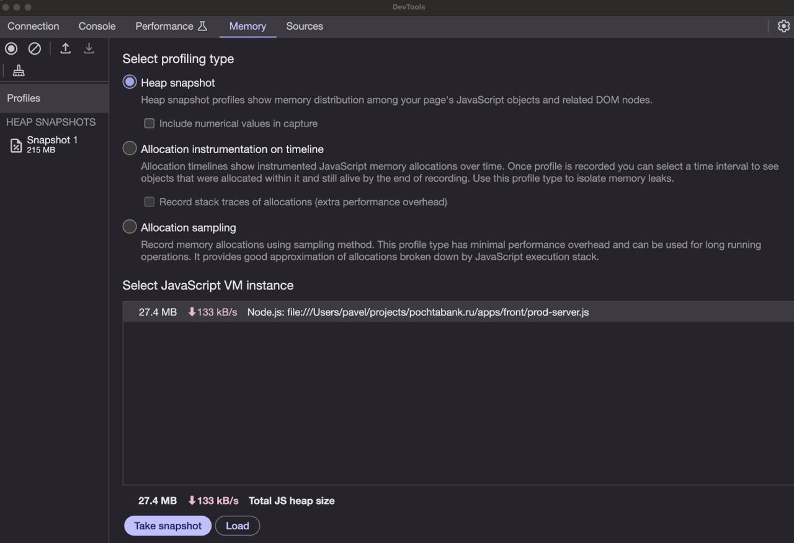

Shower Presentation Engine
Yours Truly, Famous Inc.
Memory leak
Heap out of memory или утечки памяти в Node.js
План доклада
Краткий экскурс в архитектуру Node.js
Утечки памяти - определение, кейсы и дебаггинг
Архитектура Node.js - 1й вариант
V8
V8
Разработан датчанами из Google для повышения производительности и масштабируемости
Написан на C++
Благодаря нему можно использовать Node.js для написания обычных приложений (VScode, Postman)
А что было до V8
JS-код был только клиентским и мог воспроизводиться только в браузере
Поэтому, он полезен ещё тем, что -
Предоставляет функции, связанные с запуском JS-файлов (компилирует и выполняет)
Обрабатывает стек вызовов*
Управляет выделением памяти для объектов JS
Сбор мусора
libuv
libuv
Стороняя библиотека
Написана на C
Предоставляет доступ к операционной системе
Предлагает функции, самые важные из которых - Event loop, Streaming, FileAsync, Pipes, ChildProccesses
Как это работает всё вместе?
Доп.вопрос - чем эта модель отличается от асинхронности в других ЯП?
Неблокирующий ввод-вывод, обратный вызов
Go - параллелизм с доступом ко всем ядрам ЦП и общением через каналы
V8 и память
V8 - движок
В его ЖЦ есть операции выделения памяти под собственные объекты и структуры данных
Но нас интересуют stack и heap (стек и куча)
V8 и память. Стек
Это структура данных
Список элементов, которые обрабатываются и хранятся по принципу LIFO
В стеке JS хранит примитивные типы данных (string/number/boolean/null/undefined) и ссылки на всё остальное
Стек - статическое* выделение памяти
V8 и память. Куча
Это дерево
Хранятся элементы, размер которых неизвестен заранее
V8 выделяет на них память по мере необходимости
Куча - динамическое* выделение памяти
Доп.вопрос - чем этот подход в работе с памятью отличается от других ЯП?
V8 и мусор
Объекты-сироты из кучи, на которые никто не ссылается из стека (прямо или косвенно) являются мусором
Сборщик мусора освобождает неиспользуемую память для того, чтобы повторно её использовать
В V8 СМ'ы поколенческие, используются два этапа, но оба stop the world
Доп.вопрос - как справляются языки без СМ?
Ручное управление памятью
Rust - области видимости
Утечки памяти
Утечки памяти
Цикл потребления памяти - выделение, потребление, освобождение
Утечка - это ситуация, при которой третий шаг не наступает
Чаще всего это происходит потому, что где-то до сих пор хранится ссылка на данные
Опыт и статьи из интернета
Статьи из интернета
Статьи из интернета
Всегда предлагают следующие потенциальные случаи утечек:
Глобальные переменные
Множественные ссылки
Замыкания
Таймеры и события
Вебсокеты/соединения
Глобальные переменные
Таймеры и события
Замыкания
Опыт
Мои кейсы
Подозрения на утечки, heap out of memory
Утечки коннектов к redis/db
Исследование почтабанка
Подозрения на утечки, heap out of memory
Неоптимальная работа с памятью
Задача - выгрузить в архивы много xml файлов. Консольная команда.
Проблемы
Плавающая ошибка heap out of memory, т.к cron
Локально не воспроизводится
Увеличение выделенной памяти под old результатов не дало
Диагностика
Визуально - память утекать не должна
Потребление зашкаливает, нужен рефакторинг
После рефакторинга - замеры потребления
Рефакторинг
Limit/Offset в выборке
Много маленьких архивов вместо 1 большого в памяти
1 большой архив по пути, а не в памяти
Замеры
Результаты по кейсу
Способ подойдёт, если Вы примерно понимаете, где потенциальная утечка
Если скрипт выполняет достаточно долго, чтобы подключился GC
Утечки не было, но потребовался рефакторинг
Безудержное раздувание памяти - не выход
После замеров девопсы ещё раз заглянули в лимиты
Утечки коннектов к redis/db
Утечки коннектов к redis/db
Redis
Если самостоятельная работа, не через драйвер ФВ:
Открыть коннект
Выполнить работу
Закрыть коннект
DB
Утекают чаще всего коннекты к БД, а не результаты/запросы
Маркер - Ошибки БД в sentry/приложении
Порядок действий
Попытаться как можно уже определить use-case, которые вызывают эту ошибку
Анализ траффика, опрос коллег
При наличии 5< use-case подключиться к БД
select sum(numbackends) from pg_stat_database
Порядок действий
Попытаться как можно уже определить use-case, которые вызывают эту ошибку
Анализ траффика, опрос коллег
При наличии 5< use-case подключиться к БД
select sum(numbackends) from pg_stat_database
Находим функционал, который не отпускает коннекты
Решение (в моём случае)
Проверка запросов
Проверка транзакций (орм может работать с ними иначе)
Проверка подключений и экспорта объекта подключения
Исследование почтабанка
Исследование почтабанка. Инструменты
node --inspect
require('v8').writeHeapSnapshot();
Исследование почтабанка. Условия
Хорошая рабочая машина
Prod сборка
Проксирование
Возможность в случае v8 делать дамп периодически
Или делать дамп в graceful shutdown
Задача - получить дамп памяти, чтобы было, что анализировать
writeHeapSnapshot
Дополнительные пакеты не нужны
Добавляем конструкцию прямо в код
Ждём время (долго) и находим файл в ФС
F12 + Загрузить снимок
node --inspect
Билдим проект npm run build
Запускаем проект с опцией --inspection
Заходим на сайт, жмём f12

Задача - эмулировать пользователя через краулер
Берём любой краулер
Настраиваем и травим его на сайтмап
Следим за потребляемой памятью и смотрим логи
ВАЖНО - Делать снимки кучи нужно через временные интервалы и выполнение разных uc
Обозначившиеся проблемы
Билдим проект npm run build
Запускаем проект с опцией --inspection
Заходим на сайт, жмём f12
Решение этих проблем
Висящие методы
Статический контент вакансий, по какой-то причине плодящийся в памяти
store - глобальная переменная
Запрос в middleware всей страницы для id
Бесконтрольные Console.log
Неосторожная работа со гигантскими строками (replace всего контента)
Методами с дублированием и копированием гигантских массивов данных
Обновление nextjs с нежелательной версии до последней минорной
Итоги
Нарастающая память по 30 мб (в данном случае) ушла
После прогрева кешей память фиксируется и GC под нагрузкой успевает увести её в адекватные значения
Это ещё далеко не всё, что есть на ПБ, рефакторинг критически необходим
Конец